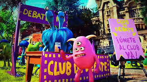

Academic Clubs

These clubs help students develop their monster minds through teamwork and innovation.
- Scare Studies Society – A club for monsters who want to improve their scaring techniques through practice, research, and fun competitions.
- Monster Mechanics – Members design, build, and repair monster inventions around campus, from scream-powered bikes to dorm gadgets.
- Roar Research Team – Focused on studying and improving scream energy efficiency to make the monster world more sustainable.
- Math Club – Even the most naturally gifted students can only reach 60 if they rely on counting fingers and toes.
- Debate Club – A group of level-headed thinkers, taking sides on the University's most important issues.
- Junior CDA – For those who thrive in a disciplined atmosphere, future order-keepers learn the ropes of safety and law enforcement.
Creative Clubs

- Frightful Art Club – For creative monsters who love painting, sculpting, or designing spooky art pieces inspired by campus life.
- MU Improv – A group of hilarious monsters who perform unscripted comedy sketches that get the crowd howling with laughter.
- Howl Harmonics – A singing group known for their perfectly eerie harmonies and performances at MU events.
- Glee Club – Let the "M.U.sic" competitions begin! The Glee Club supports many student vocal groups on campus, including the Scare-atones, The Night Tenors, and the Off-Key Mumblers.
- Film Society – MU Senior Phyllis Longslime hosts a monthly viewing party and post-screening discussion about the scariest child villains in monster movie history.
Community Involvement
Giving back to the monster world is a big part of the MU experience.
- Monster Mentors – Pairs older students with freshmen to help them adjust to university life and make new friends.
- Campus Cleanup Crew – Keeps MU’s grounds beautiful and promotes eco-friendly habits around campus.
- Smile Squad – Volunteer to welcome new students to campus for new student orientation in the fall. Did we mention “yellow t-shirts”?
- Martial Arts Club – You might be able to block two karate chops at a time, but can you face current amateur champion Turner Dourton (MU junior) who has eight fists of fury? All skill levels welcome to the MU Dojo.